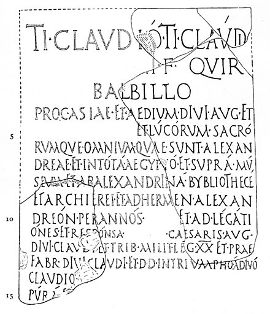
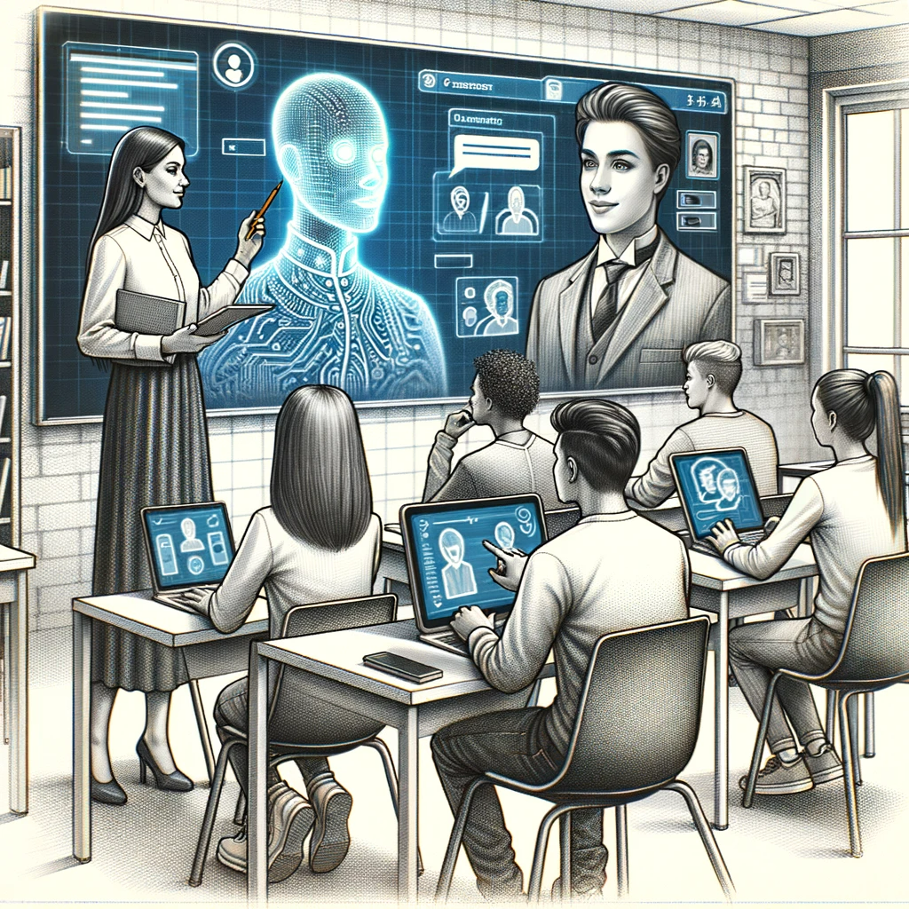

One of the exams had the format “there is a realistic case study,
you need to describe the actions necessary to solve it.”
We had only two samples from the teacher: 2 situations and 2 expected answers to them.
So we added the theory from the slides of all the lectures into the GPT,
followed it with exam samples and asked it to generate similar tasks and answers to them based on the received theory.
Super fast preparation for this kind of exams))
Developing Critical Thinking
in the Era of ChatGPT
by
Alex Avdiushenko
aleksandr.avdiushenko@jetbrains.comTo make long story short
Oral Tradition
(circa 100,000 BCE - 3,200 BCE)

Birth of Writing and Numeracy
(circa 3,200 BCE)
Scrolls and Libraries
(circa 1200 BCE — 15th Century CE)

The Great Library of Alexandria in Egypt
ALEXANDRINA BYBLIOTHECE
The Printing Press
(1440 CE)
Electricity and Telecommunication
(19th century)
Postal delivery time from London in 1850
days
to reach
12
New Yourk
13
Alexandria, Egypt
19
Istanbul, Turkey
33
Mumbai, India
45
Singapore
57
Shanghai, China
73
Sydney, Australia
Digital Age and the Internet
(late 20th century)
Artificial Intelligence and ChatGPT
(21st century)

Information is extremely accessible!
The Influence of ChatGPT in Education
Chegg Inc — an NYSE-listed company focused on improving learning and learning outcomes for students
Student's view on AI assistance


The process of completing practical homework with writing code has now changed:
ChatGPT writes basic, often broken, code, which I take as the basis for further execution of the task.
In the further process of execution Yaroslav use it as a bug fixer — it is not always easy to understand what the error is. So you can throw the code into it and ask to find and fix the error.
In the further process of execution Yaroslav use it as a bug fixer — it is not always easy to understand what the error is. So you can throw the code into it and ask to find and fix the error.
Pros and cons of ChatGPT
Useful cases:
- helps answer questions for tools with poor or unreadable documentation
(for example, it can tell you how to start using
gdb) - gives good and quick examples for some JSONs, XMLs with the necessary characteristics, or some fixtures to fill the database
- helps to overcome the fear of a “blank slate”
What it doesn't handle well:
- any task where you need to understand deeply the generel context of the whole project
- not typical problems in not so popular languages: if you ask to solve a dynamic programming problem in Haskell, it gives funny answers
- for different math fact about half of the GPT-generated proofs are incorrect
AI-powered workflow for teaching
- Direct the AI assistant step by step (as with human, yes)
- Do a lot of checks: computations (via Wolfram for math or via compiler and tests for code)
- Draw beautiful high-quality illustrations, in pencil or in vector formats
- Send all routine tasks in a broad sense to the ChatGPT